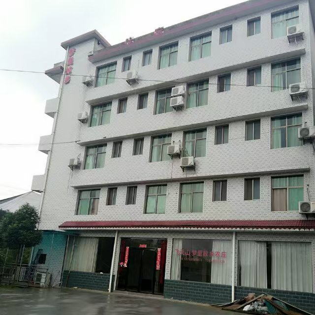
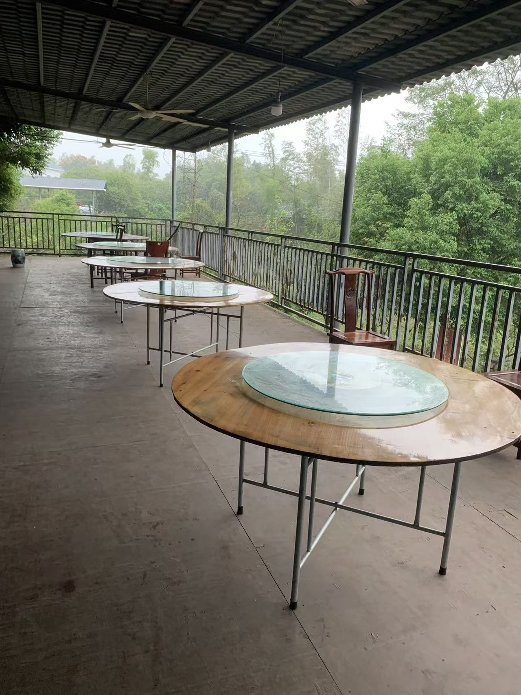
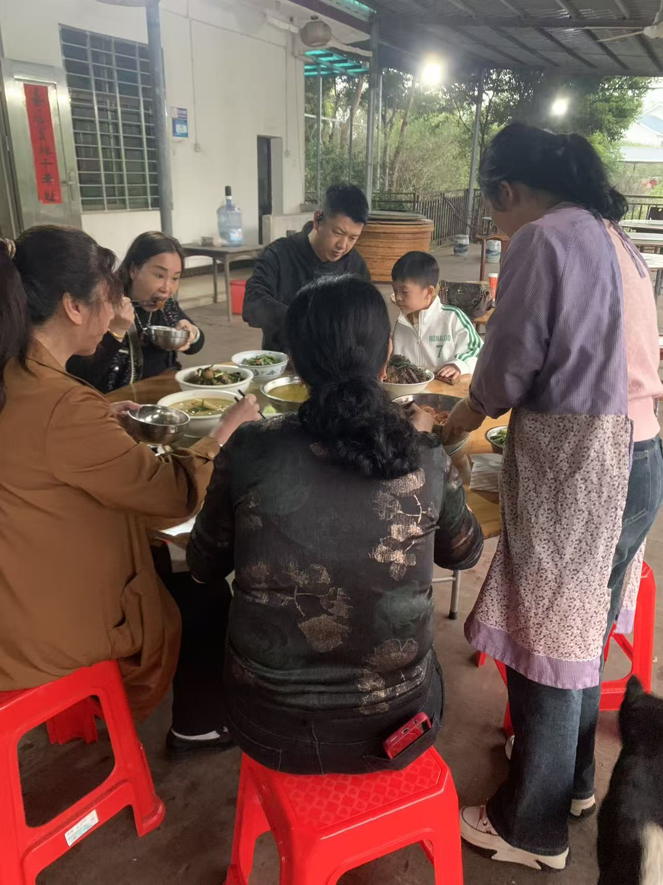

ABOUT US
在飞天山脚下，
留一段慢下来的时间。
梦里故乡农庄坐落在飞天山西大门老虎寨风景区，抬头是丹霞峰林，转身是竹木与田园。
白天沿山水而行，看丹崖、碧水与晨雾；傍晚回到农庄，围桌吃一顿热饭。这里提供多种客房、农家餐饮、临水与山景休闲空间，也适合家庭出游、朋友小聚和团队用餐。
了解农庄详情 →
飞天山西大门 · 老虎寨预订咨询 137 8654 1672
ABOUT US
梦里故乡农庄坐落在飞天山西大门老虎寨风景区，抬头是丹霞峰林，转身是竹木与田园。
白天沿山水而行，看丹崖、碧水与晨雾；傍晚回到农庄，围桌吃一顿热饭。这里提供多种客房、农家餐饮、临水与山景休闲空间，也适合家庭出游、朋友小聚和团队用餐。
了解农庄详情 →
FIELD NOTES
STAY & DINE

单人、双人及三人住宿选择，适合短住、家庭与同行伙伴。

宽敞的室内外用餐空间，可接待家庭聚餐与团队用餐。

游山归来坐下吃饭，让旅途多一点烟火气与人情味。
LIVE MOMENTS
短片记录农庄日常、翠江水岸与飞天山沿途风景。点击播放，声音由您决定。
飞天山旅途片段
老虎寨沿途实景
丹霞与日落
农庄生活一刻
EXPLORE CHENZHOU
以下为旅行灵感。景区开放、预约和票务政策可能调整，出发前请通过官方渠道确认。